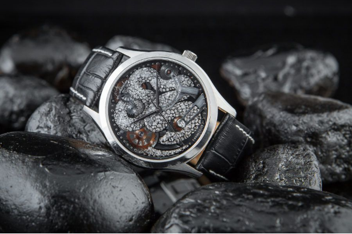

Nói đến loài vật mang ý nghĩa biểu trưng đa dạng không thể không nhắc tới loại rắn. Ứng với mỗi nền văn hóa ở mỗi quốc gia - vùng lãnh thổ, hình tượng rắn mang một ý nghĩa đặc trưng khác nhau. Tuy nhiên có một điểm chung phổ biến của loài rắn đó là biểu tượng của sức mạnh, trí tuệ minh mẫn và sức sống bất tử. Đây cũng là lí do Tổ chức Y tế thế giới WHO chọn rắn là hình rắn làm biểu tượng.
Đối với hãng thương hiệu đồng hồ Thụy Sỹ hơn 300 năm tuổi – L’duchen, biểu tượng của loài rắn được truyền cảm hứng sáng tạo cho đội ngũ thiết kế, nghệ nhân chế tác, để tạo mẫu đồng hồ L’Duchen Silver Snake mã hiệu D 161.11.23 như một biểu tượng cho đẳng cấp sang trọng, sự quyền quý. Đồng thời khẳng định vị thế, sức mạnh của chủ nhân.
Bộ máy trong đồng hồ, từng chi tiết nhỏ nhất trên mặt số hình rắn được lắp ráp và vẽ hoàn toàn thủ công bằng tay bởi nhóm thợ đồng hồ có kinh nghiệm, thực hiện tất cả các giai đoạn lắp ráp từ đầu đến cuối. Sự hoàn thiện đồng hồ vô cùng nổi bật với các viên đá quý được đặt khéo léo, các chi tiết uốn lượn trên mình rắn chính xác tuyệt đối, được đánh bóng cầu kỳ, phối màu độc đáo. Có thể nói rằng, L’Duchen Silver snake mã hiệu D 161.11.23 mang vẻ đẹp, mạnh mẽ, quyền quý của trang sức hình rắn đã ‘thôi miên’ không ít doanh nhân giàu có, thành đạt khắp 5 Châu.
Tất cả những tính năng phức tạp ẩn chứa trong bộ máy Quartz được đặt vỏn vẹn trong bộ vỏ có đường kính 41mm, dày khoảng 11mm. Một kích thước trên giấy tờ vô cùng tuyệt vời với cổ tay nam giới Châu Á nói chung và Việt Nam nói riêng. Và cũng xin được nói thêm rằng, các thiết kế của hãng L’duchen chưa bao giờ thôi nổi tiếng với thiết kế thanh mảnh và lịch lãm, tất nhiên với mẫu đồng hồ này cũng tương tự.
Đúng với ý tưởng hình rắn độc đáo, thiết kế đồng hồ cũng rất chắc chắn và mạnh mẽ, uy quyền. Càng nối dây cũng được thiết kế vát, hơi cong theo dáng cổ tay. Đi kèm với chiếc đồng hồ là bộ dây da cá sấu đen và khóa bướm chế tác bằng thép không gỉ cao cấp, cùng chất liệu với bộ vỏ. Nhiều người đánh giá cao chất liệu chế tác quý hiếm dùng trong chế tác bộ vỏ, dây đeo, núm vặn mặc dù được hoàn thiện tỉ mỉ, nhưng thứ làm nên sự cuốn hút của chiếc đồng hồ này chính là mặt số quá độc đáo, thật xự xuất sắc cùng những chức năng phức tạp được hiển thị bên trong.
Do mặt số độc đáo, nổi bật thầm nhuần tinh thần sáng tạo và sở hữu phong cách tối giản: Chỉ phô bày 3 cây kim thiết kế nhọn hình cung tên giúp người dùng có thể dễ dàng quan sát chi tiết hình rắn. Toàn bộ kim chỉ giờ, chỉ phút và chỉ giây, đinh ốc và toàn bộ chi tiết trên mặt số đều được hoàn thiện với phương pháp thủ công. Nhờ đó, cho ra một màu khối màu hài hòa vừa cổ điển vừa hiện đại, thực sự bắt mắt.